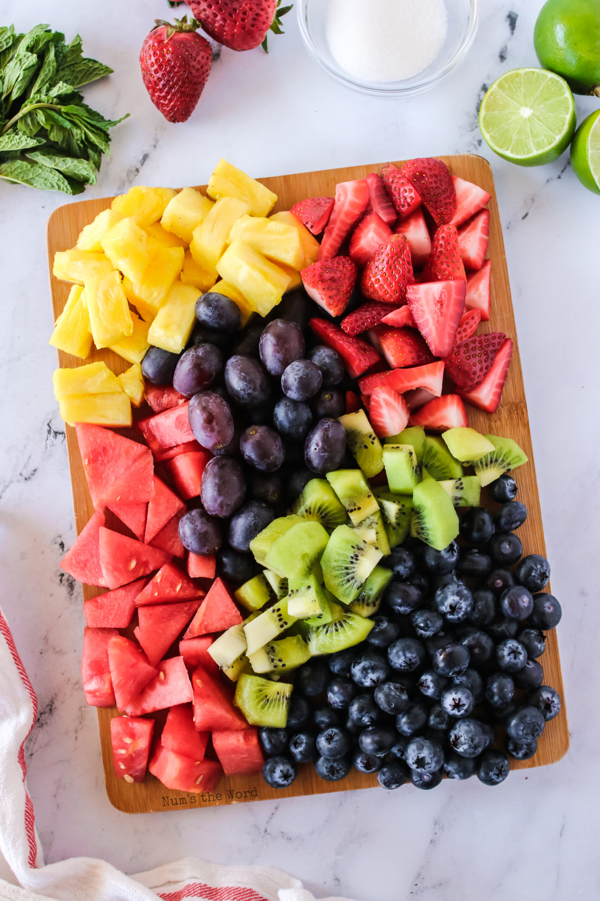

Fruit Salad

What is Fruit Salad?
Fruit salad is a sort of salad made from a variety of fruits
all chopped to a similar size. Fruit salads are versatile and
can be made from almost any fruit that can be served in small
sizes.
Ingredients
- Fruits (any amount of variety of fruit)
How to Prepare
- Prepare all fruits by peeling or washing
- Using a sharp knife, chop fruit into medium sized pieces
- Add all chopped fruits to bowl
- Mix fruits in bowl using a large spoon
- Serve fruit salad in smaller bowls, or mixing bowl